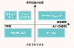
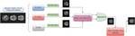

フューチャー技術ブログ
https://future-architect.github.io/
フューチャーの開発者による公式技術ブログです。業務で利用している技術を幅広く紹介します。
フィード
OpenAPI Specification v3.0.3のコーディング規約を公開しました 3
3
フューチャー技術ブログ
<h2 id="はじめに"><a href="#はじめに" class="headerlink" title="はじめに"></a>はじめに</h2><p>フューチャーの有志メンバでOpenAPI Specification（OAS）
1日前
［入門］Webフロントエンド E2E テスト を出版しました 14
フューチャー技術ブログ
<img src="/images/20240701a/d0988e2d-efbc-e4c5-5c8a-1bf25d2db216.png" alt="" width="1187" height="1500"
2日前
PostgreSQLのPub/Sub機能とJavaのクライアント実装 126
フューチャー技術ブログ
<p>本記事は<a href="/articles/20240617a/">「珠玉のアドベントカレンダー記事をリバイバル公開します」</a>企画のために、<a
5日前
エンタープライズJavaで使えるORM「uroboroSQL」まとめ（リバイバル）
フューチャー技術ブログ
<p>本記事は<a href="/articles/20240617a/">「珠玉のアドベントカレンダー記事をリバイバル公開します」</a>企画のために、<a
6日前

社会人からはじめる競技プログラミング 4
フューチャー技術ブログ
<p>本記事は<a href="/articles/20240617a/">「珠玉のアドベントカレンダー記事をリバイバル公開します」</a>企画のために、以前Qiitaに投稿した記事を一部ブラッシュアップしたものになります。</p><h2 id="はじめに"><a
7日前
人工知能学会 (JSAI2024) 参加報告
フューチャー技術ブログ
<h1 id="はじめに"><a href="#はじめに" class="headerlink" title="はじめに"></a>はじめに</h1><p>みなさんはじめまして。Strategic AI Group (SAIG)
7日前
アルゴリズムで実社会を捉える～評価関数の作り方～
フューチャー技術ブログ
<p>本記事は「<a href="/articles/20240617a/">珠玉のアドベントカレンダー記事をリバイバル公開します</a>」企画のために、<a
8日前
package.json dependencies メンテの仕方 最短ルート 4
フューチャー技術ブログ
<img src="/images/20240624a/top.png" alt="" width="800" height="623"><p>本記事は「<a
9日前

画像生成AIは医療の未来を創れるのか？(リバイバル)
フューチャー技術ブログ
<p>本記事は「<a href="https://future-architect.github.io/articles/20240617a/">珠玉のアドベントカレンダー記事をリバイバル公開します</a>」企画のために、<a
12日前
個人的docker composeおすすめtips 9選 435
フューチャー技術ブログ
<img src="/images/20240620a/20210117130925.jpg" alt="" height="800" width="384"><p>本記事は<a
13日前

はじめてチームリーダーをやってみて気にしていたこと。（Qiitaリバイバル記事）
フューチャー技術ブログ
<img src="/images/20240619a/undraw_stand_out_1oag.png" alt="" width="800" height="564"><p>この記事は<a
14日前
珠玉のアドベントカレンダー記事をリバイバル公開します
フューチャー技術ブログ
<img src="/images/20240617a/undraw_Innovative_re_rr5i.png" alt="" width="980" height="734"><h2 id="はじめに"><a href="#はじめに"
16日前
クラウドロックインされないアーキテクチャ「Cloud Agnostic Architecture」のすすめ
フューチャー技術ブログ
<p>この記事は<a href="/articles/20240617a/">Qiitaのアドベントカレンダー記事</a>のリバイバル公開です。<br>※ 当時の記事から、一部表現を見直し加筆しています。</p><h2 id="はじめに"><a href="#はじめに"
16日前
Gitのブランチの役割を考える
フューチャー技術ブログ
<p>Gitのブランチ戦略にはいくつかあります。</p><ul><li>Gitフロー</li><li>GitHubフロー</li><li>GitLabフロー</li></ul><p>チームの戦略を考えるときにどれかを参考にしつつカスタマイズするときにいろいろ不都合が生
22日前
アーキテクト教育をボトムアップで考えるLunchセッション会
フューチャー技術ブログ
<img src="/images/20240610a/OIG1.jpg" alt="OIG1.jpg" width="1024" height="1024" loading="lazy"><h1 id="はじめに"><a href="#はじめに"
23日前
AWS初心者が【日本語版】AWS Cloud Quest: Cloud Practitionerをプレイしてみた
フューチャー技術ブログ
<h1 id="はじめに"><a href="#はじめに" class="headerlink"
1ヶ月前
AirPods Proで頭の角度を検出し、リアルタイムにキャラクターを動かす
フューチャー技術ブログ
<img src="/images/20240605a/image.png" alt="" width="1200" height="390" loading="lazy"><h1 id="はじめに"><a href="#はじめに" class="headerlink"
1ヶ月前
protoファイルからコードを自動生成するprotocのプラグインの作り方
フューチャー技術ブログ
<h1 id="はじめに"><a href="#はじめに" class="headerlink" title="はじめに"></a>はじめに</h1><p>関です。以前、<a
1ヶ月前
Cloudflare R2 + NextCloudで作る自分専用クラウドストレージのススメ
フューチャー技術ブログ
<p><a href="/articles/20240527a/">Cloudflare連載</a>の4つ目です。</p><h2 id="はじめに"><a href="#はじめに" class="headerlink"
1ヶ月前
CloudflareでWebサイトのメンテナンスイン/アウトを実装
フューチャー技術ブログ
<p><a href="/articles/20240527a/">Cloudflare連載</a>5日目の記事です。</p><h1 id="はじめに"><a href="#はじめに" class="headerlink"
1ヶ月前
ドイツで開催された国際物流展示会「LogiMAT2024」を視察してきました!～その2～
フューチャー技術ブログ
<h2 id="はじめに"><a href="#はじめに" class="headerlink" title="はじめに"></a>はじめに</h2><p>物流サービス事業部の小林です。ドイツのシュツットガルトで3月に開催された国際物流展示会<a
1ヶ月前
Cloudflare採用のアーキテクチャ選定
フューチャー技術ブログ
<img src="/images/20240529a/image.png" alt="" width="1200" height="404" loading="lazy"><p><a
1ヶ月前
Cloudflare D1を触ってみる
フューチャー技術ブログ
<img src="/images/20240528a/image.png" alt="" width="1200" height="404" loading="lazy"><p><a
1ヶ月前
Cloudflare連載を始めます & WorkersにPythonをデプロイして動かしてみる
フューチャー技術ブログ
<img src="/images/20240527a/CF_logo_stacked_blktype.jpg" alt="" width="1200" height="405" loading="lazy"><p>ロゴは <a
1ヶ月前